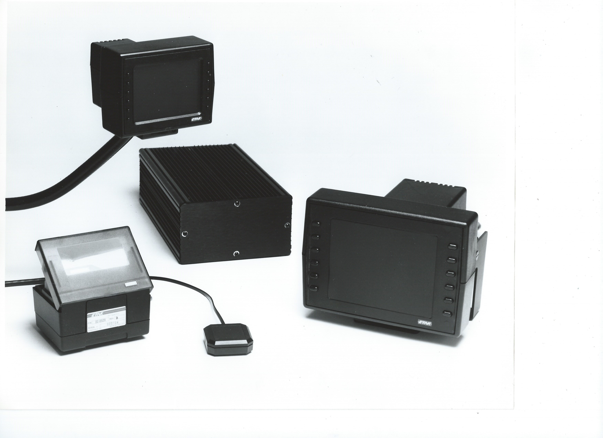
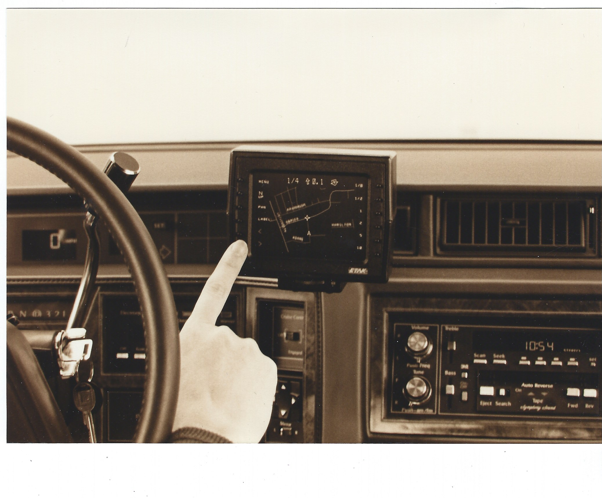

Etak Navigator
The first practical in-car navigation computer, using dead reckoning and a rotating map — years before GPS

Overview
The Etak Navigator, introduced in July 1985, was the first practical in-car computer navigation system. Without GPS (which wouldn't be available for civilian use for another decade), it used compasses, wheel sensors, and map-matching algorithms to track a vehicle's position with remarkable accuracy. A green vector CRT display showed a rotating 'heading-up' map with the car as a fixed triangle in the center — a design now universal in Apple Maps, Google Maps, and every other navigation product. The unit cost $1,395–$1,595 (roughly $4,000 in 2025 dollars), stored maps on custom high-speed cassette tapes, and was the first consumer device to offer address geocoding. Between 2,000 and 5,000 units were sold.
Etak was founded in 1983 by Stanley K. Honey, a world-class ocean navigator who had been navigating Nolan Bushnell's yacht in the Transpacific Yacht Race when the two men brainstormed a land navigation system during a 4am watch. Bushnell provided $500,000 in seed funding. The engineering team, drawn largely from SRI International, applied centuries of maritime dead-reckoning techniques to automobiles. The digital map database Etak built became the foundation of modern commercial digital mapping, surviving through acquisitions by News Corp, Sony, and Tele Atlas/TomTom. At least 12 Etak alumni later worked on Apple Maps.
Deep dive
The idea for Etak was born during the 1983 Transpacific Yacht Race from Los Angeles to Honolulu. Stanley K. Honey, navigating Nolan Bushnell's yacht Charley, had built a custom marine navigation computer. During a 4am watch together, Bushnell said "Wouldn't it be great if you could have that for a car?" Honey replied that he knew how to build it. Bushnell said "Yeah, let's do that and I'll fund it," and provided $500,000 in seed capital. Etak was incubated at Bushnell's Catalyst Technologies facility in Sunnyvale, California. The name 'Etak' comes from a Polynesian navigational concept where ancient mariners imagined their canoes were stationary while islands 'moved' past them — directly analogous to the heading-up map display philosophy that became the product's signature innovation.
The Navigator used augmented dead reckoning: a flux-gate electronic compass mounted on the rear windshield, two variable-reluctance wheel sensors on non-driven wheels, and a topological map-matching algorithm that continuously 'snapped' the computed position to the nearest road. The core computer unit — an Intel 8088 with 256KB RAM — was housed in a shoebox-sized aluminum chassis installed in the trunk. Maps were stored on custom high-speed cassette tapes (3.5 MB each, 200 cm/sec tape speed, polycarbonate shells tested to 105°C because standard cassettes melted on dashboards). The display was a green monochrome vector CRT (not raster — too expensive at the time) available in 4.5-inch ($1,395) and 7-inch ($1,595) versions. The car was represented as a fixed triangular arrowhead in the center of the screen while the map rotated and scrolled beneath it — the 'heading-up' orientation that became the universal standard. This arrowhead symbol, designed by engineer George Loughmiller, was inspired by the spaceship from Atari's Asteroids game and is still used by Apple Maps and Google Maps today.
The Navigator's interaction design was unusually thoughtful for 1985. Twelve soft-labeled buttons flanked the screen (six per side), with their functions changing based on the current mode. Destination entry used a two-button-per-character system where the first button selected a group of letters and the second selected the specific character — an early solution to text input on a device with minimal buttons. The system auto-completed street names from its database after the first few letters. Critically, the engineers built in a safety lockout: destination entry and manual position correction were disabled while the vehicle was in motion. This predated modern 'distracted driving' concerns by over two decades. Calibration was an ongoing, self-improving process — drivers would confirm their position at known intersections, and the system continuously refined its calibration through map-matching. With radial tires, calibration became so precise that engineers had to calculate distances on the geoid rather than a spherical earth approximation.
The Navigator launched in July 1985 at $1,395 (4.5-inch screen) and $1,595 (7-inch), with map cassettes at $35 each. Installation required a trained technician and took about four hours. Between 2,000 and 5,000 units were sold. Notable users included Michael Jackson (who had one installed in his Mercedes-Benz) and Gary Coleman. The 1986 film Nothing But Trouble featured the Navigator in a BMW — though with a fictional color display. Selling a product whose category didn't yet exist proved extremely difficult. Etak pivoted from consumer hardware to licensing digital map data and technology to automotive suppliers: Clarion (Japan), Bosch/Blaupunkt (Germany, as TravelPilot), and GM/Delco (USA). The company was acquired by Rupert Murdoch's News Corporation in 1989 for approximately $25 million, then by Sony in 1996, and eventually became part of Tele Atlas/TomTom. The digital map data Etak created survives in modern mapping products including Apple Maps.
The Etak Navigator established the fundamental interaction paradigm for in-car navigation that persists nearly 40 years later: heading-up display, car-centric viewpoint, soft-labeled buttons flanking the screen. It introduced the concept that a machine could 'know where you are' — a mental shift whose consequences (location-based services, ride-hailing, real-time traffic) are now so pervasive we treat them as infrastructure. The Navigator invented the universal car-navigation arrow symbol, pioneered map-matching (still used in every navigation system today), and was arguably the first consumer computing device designed to be used while operating a vehicle. The safety lockout for destination entry was decades ahead of its time.
Team & pioneers
- Stanley K. Honey. Founder. World-class ocean navigator, former SRI researcher. Conceived the system and provided the maritime navigation expertise.
- Nolan Bushnell. Seed investor. Founder of Atari and Chuck E. Cheese. Incubated Etak at Catalyst Technologies. Brainstormed the concept with Honey on his yacht.
- Ken Milnes. Co-founder from SRI. Co-designed the marine navigation system for Bushnell's yacht that preceded Etak.
- Alan Phillips. Co-founder from SRI.
- George Loughmiller. Engineer. Created the triangular car-navigation arrow symbol, inspired by Atari's Asteroids spaceship.
- Marvin White. Mathematician recruited from U.S. Census Bureau. One of two people in the country who understood topological map data structures. Led development of Etak's hierarchical map storage.
- Walt Zavoli. Director of R&D. Co-authored the foundational 1986 IEEE paper on map-matching augmented dead reckoning.
Media


Sources
- Stan Honey's First-Hand Account of Etak (ETHW)
- Original Etak Technical Paper — Royal Institute of Navigation (1985)
- Computer History Museum — Etak Navigator artifact
- Smithsonian National Museum of American History — Etak Navigator display unit
- Benj Edwards, Fast Company — 'Who Needs GPS? The Forgotten Story of Etak' (2015)
- Map Happenings — 'A Curious Phenomenon Called Etak' (2024, written by Etak alumnus)
- TIME Magazine — 'Driving by the Glow of a Screen' (April 20, 1987)
- Popular Science Cover — June 1985
- IEEE Paper — 'Map matching augmented dead reckoning' (Zavoli & Honey, 1986)
- Wikipedia — Etak
- Hackaday — 'How Etak Paved The Way To Personal Navigation' (2018)